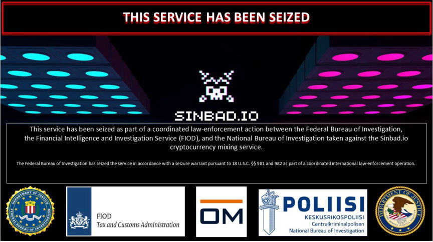
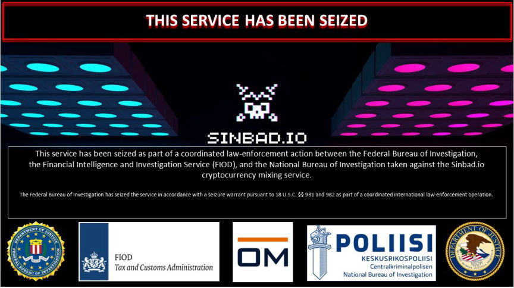

US Treasury Department Sanctions Sinbad Mixer
The U.S. Department of the Treasury has sanctioned the Sinbad cryptocurrency mixing service over its use in money laundering by the Lazarus Group.

The U.S. Department of the Treasury’s Office of Foreign Assets Control (OFAC) said in a press release that Sinbad was used by the Lazarus group, a hacking group sponsored by the Democratic People’s Republic of Korea (DPRK), in the laundering of crypto acquired from some of the largest crypto heists.
The Lazarus group allegedly used Sinbad to launder a large portion of the $100 million in crypto stolen in June 2023, from Atomic Wallet users. Sinbad was also used to launder large portions of the $620 million stolen from Axie Infinity in March 2022, and the $100 million stolen from Harmony's Horizon Bridge in June 2022.
In addition to sanctioned entities such as the Lazarus Group, Sinbad was allegedly used to launder funds by users of child abuse platforms and darknet marketplaces and their users.
Sinbad's sanction was accompanied by the seizure of its clearnet domain. Sinbad's onion domain is no longer operational.
Sinbad joins Tornado Cash and Blender.io in the list of crypto mixers sanctioned by the US Treasury Department.

Seizure banner displayed on Sinbad.io
The U.S. Department of the Treasury’s Office of Foreign Assets Control (OFAC) said in a press release that Sinbad was used by the Lazarus group, a hacking group sponsored by the Democratic People’s Republic of Korea (DPRK), in the laundering of crypto acquired from some of the largest crypto heists.
The Lazarus group allegedly used Sinbad to launder a large portion of the $100 million in crypto stolen in June 2023, from Atomic Wallet users. Sinbad was also used to launder large portions of the $620 million stolen from Axie Infinity in March 2022, and the $100 million stolen from Harmony's Horizon Bridge in June 2022.
In addition to sanctioned entities such as the Lazarus Group, Sinbad was allegedly used to launder funds by users of child abuse platforms and darknet marketplaces and their users.
Sinbad's sanction was accompanied by the seizure of its clearnet domain. Sinbad's onion domain is no longer operational.
Quote:Deputy Secretary of the Treasury Wally Adeyemo
Mixing services that enable criminal actors, such as the Lazarus Group, to launder stolen assets will face serious consequences. The Treasury Department and its U.S. government partners stand ready to deploy all tools at their disposal to prevent virtual currency mixers, like Sinbad, from facilitating illicit activities. While we encourage responsible innovation in the digital asset ecosystem, we will not hesitate to take action against illicit actors.
Sinbad joins Tornado Cash and Blender.io in the list of crypto mixers sanctioned by the US Treasury Department.